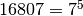
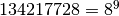
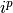

Powerful digit counts¶
Problem 63
The 5-digit number, , is also a fifth power. Similarly, the 9-digit number, , is a ninth power.
How many n-digit positive integers exist which are also an nth power?
Solution
Use the euler04.digits() function.
from euler04 import digits
Yield a sequence of triples with a number, i, power, p, and  where the length of == p.
What’s the upper bound on this search? For what p does this no longer work? When p ≥ 22, it appears that no longer produces numbers of p digits.
def genNdigitNPower( limit=30 ):
"""
>>> s5= list( genNdigitNPower(6) )
>>> (7, 5, 16807) in s5
True
>>> s9= list( genNdigitNPower(10) )
>>> (8, 9, 134217728) in s9
True
"""
for p in range(limit):
i= 0
while len(digits(i**p)) <= p:
if len(digits(i**p)) == p:
yield i, p, i**p
i += 1
Test the module components.
def test():
import doctest
doctest.testmod(verbose=0)
Compute the answer.
def answer():
return len( list( genNdigitNPower(30) ) )
Confirm the answer.
def confirm(ans):
assert ans == 49, "{0!r} Incorrect".format(ans)
Create some output.
if __name__ == "__main__":
test()
ans= answer()
confirm(ans)
print( "The number of n-digit positive integers exist which are also an nth power:", ans )